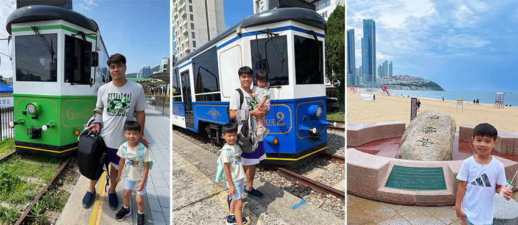
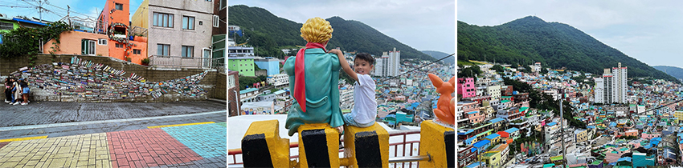
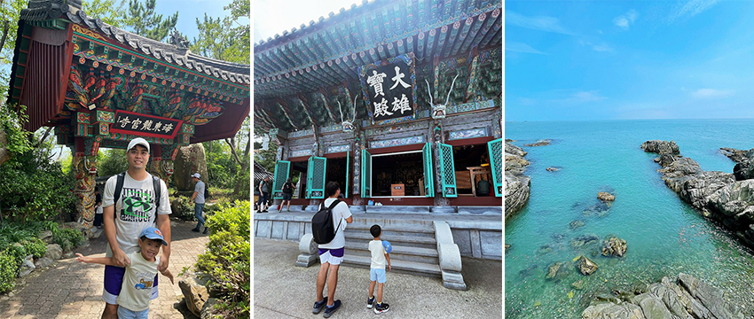
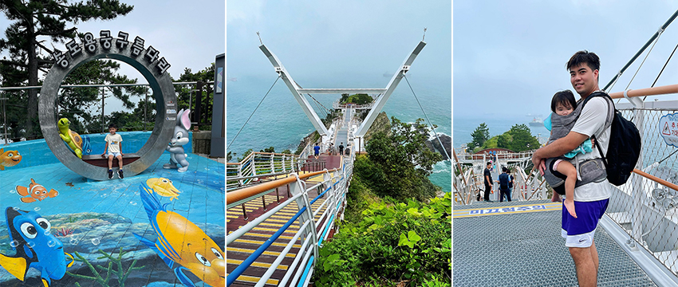
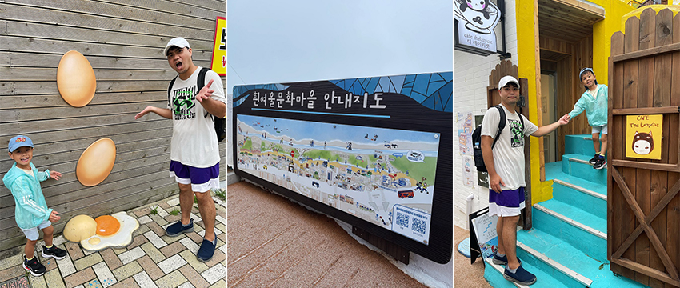
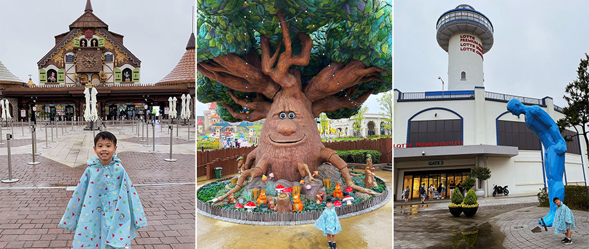

疫情解封後，國外旅遊風潮如洶湧巨浪一般席捲而來，讓已經三年沒有出國的我們也蠢蠢欲動。因此，我們挑選了一個距離較近、飛行時間較短的目的地- 韓國釜山。飛機搭乘時間僅需兩小時，對於帶有小孩的家庭而言格外適宜。釜山為韓國第二大城市，同時也是該國最大的港口城市之一，物價比首爾低且交通較不擁擠，近期釜山成為人們出國的熱門首選。這次的釜山之旅探索了數個景點，深感其值得一遊，薦大家到釜山玩時不妨可以安排在行程裡。
海雲台觀光列車
|  |
甘川洞文化村
位於韓國釜山市一個以彩色塗鴉藝術和文化活動聞名的地區。早期是韓戰時難民們聚集所形成的村莊，後來在藝術團體的推動下，轉變為一個充滿創意和色彩繽紛的勝地，也成功帶起了當地的觀光熱潮。彩色而頗具童話風格的房子層疊出別具特色的景緻，宛如玩具積木堆疊，所以有著「積木村」的稱號，來到這不能錯過必拍景點「穿越巷弄的魚」和地標「小王子和沙漠狐狸」小王子與狐狸坐在路旁，欣賞著底下村莊，為這個地方增添了趣味。是一個適合探索拍照的好地方。
|  |
海東龍宮寺
這寺廟是沿著海岸線所建造，擁有悠久的歷史，是一處充滿魅力的建築。寺廟的周圍環繞著山脈和海洋，為釜山地區最美麗的寺廟之一。寺廟入口處會經過十二生肖石像，遊客可以與自己的生肖合照留念。要走進寺廟內需要穿過竹林和108階的石梯，沿途會有許許多多的神像，且可以遠眺建在海上峭壁上的海東龍宮寺，這一景象格外壯觀；走進寺廟內，氣派的大雄寶殿是海東龍宮寺的正殿，從寺廟內部，可以欣賞到壯麗的海岸美景，景色十分迷人，絕對值得一遊。
|  |
松島龍宮空中步道
在遭受颱風破壞後，松島雲橋於18年後在2020年6月完成整修，再次成為釜山的矚目地標。龍宮雲橋連接著岩南公園和對面的無人島東島，是一座長 127公尺，寬2公尺，距離海面高度25公尺的海上橋樑。入口處有著可愛的造景，提供遊客拍照，橋的外型是以龍頭造型打造，獨特的簍空地面設計，彷彿使人行走於海上，也能從簍空地面俯瞰著奇岩怪石和海浪拍打在岩石上所激起的雪白浪花，在這裡漫步，隨著海風撫慰，可360度欣賞無敵的海景，感受獨特視角所帶來的愜意。
|  |
白險灘文化村
釜山著名的文化藝術村落洋溢著繽紛的色彩，可以欣賞到各種創意的壁畫、雕塑和藝術裝置，每一個轉角都隱藏著驚喜，讓人流連忘返。村中不僅充滿藝術氛圍，還有舒適的咖啡廳和小店，讓遊客可以歇息片刻。如到釜山，絕對不能錯過安排一次探訪這個文化藝術村落的行程，來感受藝術家們的熱情和獨特的創意氛圍。
|  |
釜山樂天世界
位於釜山的這座主題樂園，於2022年開幕，被譽為韓國版的迪士尼樂園，以童話王國為主題，擁有極大的規模。園區內有多種大型遊樂設施，喜歡刺激感的不妨前往體驗；同時，也有溫馨遊樂設施和可愛造景，適合老少咸宜，另外在城堡內也能租借各式制服，化身青春高中生在園區拍照，增添了遊樂的趣味性。別忘了與人氣打卡地標大Talking Tre互動拍照，非常可愛。遊樂園結束後，可以前往旁邊的樂天Outlet購物中心。商場以希臘聖托里尼島風格為設計靈感，建築外觀迷人，商場內部提供多樣購物選擇，盡情享受購物的樂趣。主題樂園加上Outlet購物中心，可以度過充實愉快的一整天。
|  |
在釜山的種種美景和文化體驗中，我們度過了充實而愉快的時光，每個景點都帶給我們不一樣的感受。無論是沿著海岸的列車之旅，還是迷人的文化藝術村，亦或是寧靜的寺廟和令人心跳的樂園，都成為了我們釜山之旅的珍貴回憶。不妨將釜山列入你的旅遊計劃，一探這座城市獨特的魅力。